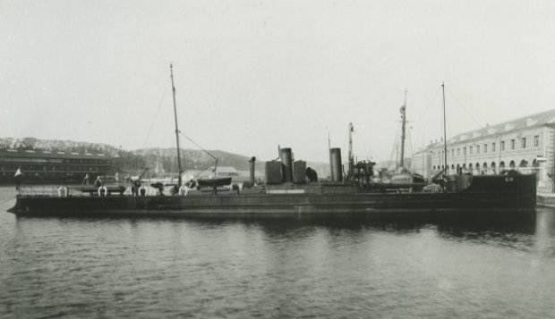
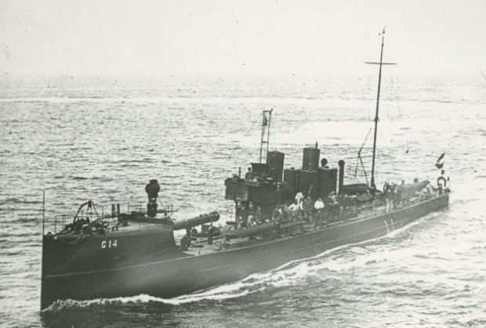
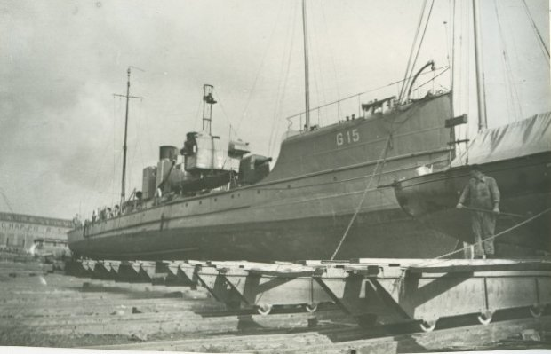
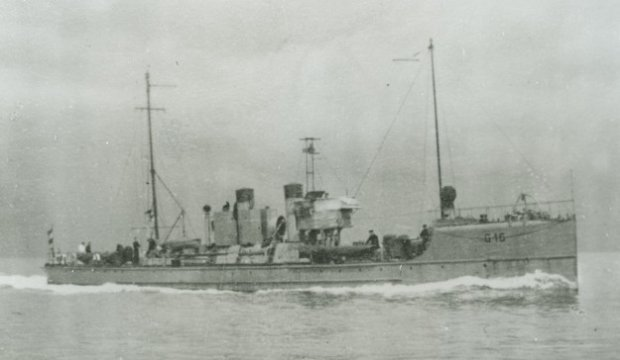

| Naam | G 13 | G 14 | G 15 | G 16 |
|---|---|---|---|---|
| Foto |  |  |  |  |
| Waterverplaatsing | 180 ton | |||
| Snelheid | 26 knopen | |||
| Bemanning | 27 | |||
| Afmetingen | 50m x 5,2m x 2,9m | |||
| Bewapening | 2x 75mm L/30 Bofors No. 4 (2x1) 2x 13mm (1x2) 3x 450mm torpedobuizen (3x1) |
|||
| Vliegtuigen | - | |||
| In dienst | 11 maart 1914 | 1914 | 3 augustus 1914 | 29 juli 1914 |
| Uit dienst | 9 augustus 1940 | Gezonken 1 januari 1919 | 27 december 1940 | Tot zinken gebracht 14 mei 1940 |